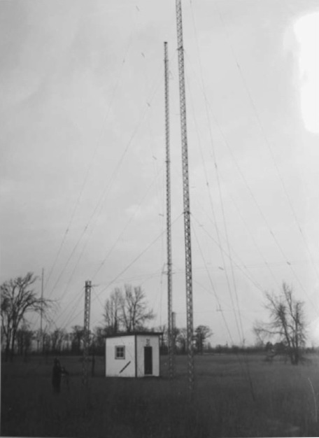

Daily Star de Sudbury (Ontario), 21 nov 1953, p. 3
|  |
Le mystère des soucoupes volantes fait l'objet d'une enquête par des scientifiques canadiens sur les bases de
l'observatoire ionosphérique du Département des Transports à Shirley's Bay, à 10 miles
au nord-ouest d'Ottawa. Certaines des tours sont montrées ici. La station d'observation est exploitée sous la
direction de W. B. Smith, ingénieur en charge de la section
d'émission et mesure du département. Nous espérons trouver quelque chose de tangible sur les soucoupes
, dit-il.